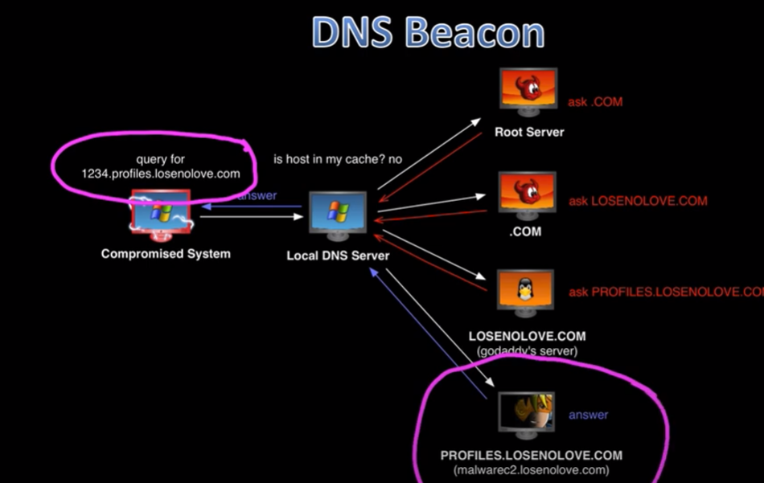

-
- DNS is slow but thats not always bad. due to so many requests
- i.e. taking screenshot is transported over many txt files
- A records do this shit moves in 4 byte responses
- 
Steps:
It asks the local DNS server, which then asks the root server. If it doesn't it begins to go down the list, shown here- Root server - you dont know? okay next
- .com - you dont know? okay next
- losenolove.com - you dont know?
- cobalt strike team server - do you know the response for 1234.profiles? yes... yes I do know the response